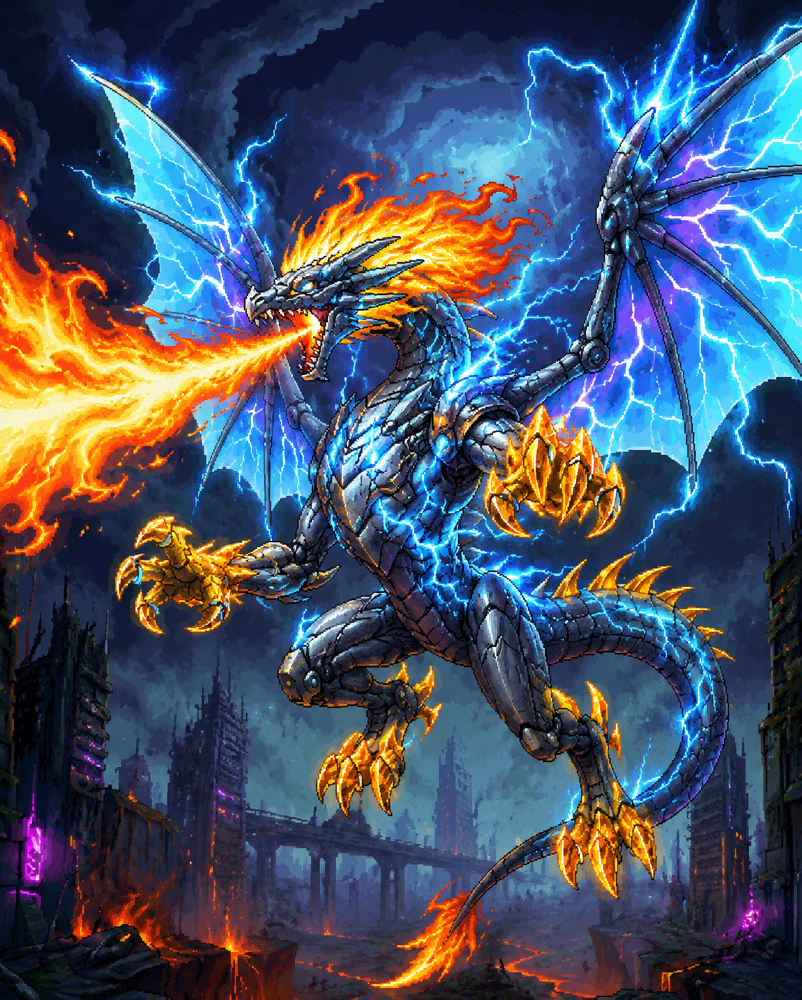

當伊格尼斯踏碎了新星科技城的最後一道防線，他將城內最尖端的零點能源矩陣與自身龍血融合。那一身由超複合合金鑄造的機械龍甲，不僅能完美導引他那焚盡萬物的原始龍焰，更讓他的動作超越了音速與直覺的範疇。
他那雙由離子能量構築的幽藍翼膜，揮動間便能引發大規模的電磁坍縮。胸口鑲嵌的超新星核心，正源源不絕地將地脈能量轉化為毀滅性的高能射線。他俯瞰著廢墟般的科技城，在絕對的科技武裝與太古力量面前，舊時代的勇氣不過是轉瞬即逝的火花。
描述： 「這是來自太古意志與永恆鋼鐵的最終裁決。當零點光華在龍喉凝聚，生靈的歸宿便已注定，行進時會帶著劇烈的畫面震顫與空氣扭曲效果，展現出一擊摧毀科技城防線的絕對破壞力。在此『燼滅』的吐息下，勇氣不過是加速燒灼的燃料，見證這份足以重塑世界的神威吧！」
視覺感：伊格尼斯展現威嚴的機械姿態，背後幽藍色的離子翼膜瘋狂閃爍著雷磁電光。它猛然昂首咆哮，口部噴吐出大量像素化的冷卻霧氣，隨即射出一枚巨大的「零點龍焰彈」。這枚彈藥的核心是一顆耀眼的亮藍色能源球，外層則被狂暴的橘紅色始祖龍焰緊緊包裹，並纏繞著不斷跳動的白色電弧特效。
伊格尼斯透過超頻怒吼觸發核心共振，在戰場周遭撕開無數細微的零點裂縫，召喚出成群的「機甲子嗣火龍」。這些小型火龍經過零點能源的強行強化，速度與破壞力皆已昇華至神性境界，將戰場化為無處可逃的焦熱地獄。
描述： 「這是來自古老地脈的平定。當炎群排開，大地將被這股銀色流光強行清洗。在此『伏地』的意志下，任何立於地表之物皆將化為灰燼。」
視覺感：數尊身披銀色機甲且尾部噴射著橘紅龍焰的小型火龍，會整齊地在固定高度排開。隨後，它們以整齊劃一的初速從畫面一側平移衝向另一側。將戰場中段區域轉化為絕對的灼熱禁區。
描述： 「防禦毫無意義，當審判自天而降。當龍影貫穿雲層，天空亦將為這份神威而哭泣。在此『天淵』的衝擊下，感受靈魂被龍焰釘在地表的恐懼吧。」
視覺感： 像素風格。多尊小型火龍，會在固定的垂直座標點出現，隨後如隕石般筆直向下俯衝。掃蕩戰場的任何角落。
描述： 「混亂即是秩序，無序即是真意。當龍影於星河間閃爍，汝等引以為傲的感官，將在混亂的閃光中徹底失能。」
視覺感：火龍群從畫面左右兩側隨機的高度呼嘯而出。它們的速度被機甲推至極限，形成一道道交錯的銀色光流。每一頭火龍出現的時機與高度皆無規律，交織成一張充滿隨機性的火力網。
描述： 「這是來自新星毀滅者的終極洗禮。每一點星火的墜落，皆是世界崩毀的序曲。在此『隕墜』的劫難下，不存在絕對的安全區，祈禱已是徒勞。」
視覺感： 大量小型火龍會隨機出現在畫面上空，以不規則的頻率與位置向地表發起自殺式的轟炸。火龍墜落軌跡上會產生扭曲的像素風場效果，落地後的爆炸範圍會相互交疊，將整片戰場化為一片沸騰的龍焰汪洋。
伊格尼斯向蒼穹發出撕裂維度的怒吼，胸口的「超新星核心」爆發出幽藍色的電磁光輝。隨其咆哮，空氣中的游離電子被強行凝聚，在半空中構築出數具散發著冰冷金屬光澤的「機械龍頭」。這些龍頭具備獨立的能量激發模組，能將始祖雷霆壓縮成巨龍之形的電漿束，以突破音障的初速噴吐而出。這股雷光的咆哮不具備實體，卻能輕易燒毀一切精密電路並氣化血肉，將戰場化為一片湛藍的行刑場。
描述： 「這是來自機神核心的最終警告。當雷鳴在固定維度響起，此世的生機便已定格。在此『蒼藍』的光束下，汝等所信奉的秩序，不過是待宰的羔羊。」
視覺感：伊格尼斯全身機甲縫隙迸發出狂暴的白色電弧。隨即，畫面左側出現四具呈垂直排列的銀色機械龍頭這些龍頭雙眼閃爍著冰冷的藍光，口中同時噴吐出寬闊且具備極高亮度的「蒼藍雷亟束」。
描述： 「無序，即是最高層級的毀滅。當驚雷在視界中無預警地跳動，汝等的感知將化為毫無意義的雜訊。在此『瞬滅』的影掠下，感受被大氣意志徹底遺棄的絕望吧。」
視覺感： 機械龍頭，在畫面的不同高度隨機、斷續地閃現。龍頭出現的瞬間便會擊發細長且狂亂的龍形閃電。這些閃電如同嗜血的蛇群，在廢墟背景下交織成一張充滿隨機性與閃爍感的雷電網。
描述： 「這是來自雲霄之上的致命俯瞰。當湛藍的雲霧遮蔽星光，逃亡便成了最可笑的掙扎。在此『驚電』的洗禮下，每一道閃光皆是龍神落下的判決，感受大氣被撕裂的戰慄吧。」
視覺感： 伊格尼斯胸口爆發出極度刺眼的幽藍強光。隨即在畫面左上方，出現一朵由翻騰的湛藍色像素雲霧與黑色機械核心構成的「葬神雷雲」半空中緩慢且沉重地橫向移動，其核心不斷閃爍著狂暴的白色電弧。
描述： 「混亂即是雷霆的本質，無序即是最終的殺戮。當驚雷在視線中無規則跳動，汝等的反射神經將化為毫無意義的廢鐵，在無盡的隨機閃光中，接受這場名為死亡的博弈吧。」
視覺感： 六角形晶體在伊格尼斯周圍呈現雜亂、斷續的閃現。每一枚晶體出現的瞬間便會朝前方噴發出快慢不一、軌跡各異的雷電彈頭。交織成一張充滿隨機性的湛藍色電網。
描述： 這是來自太古意志的最終突襲。當紅蓮劃破空際，躲避不過是延緩死亡的幻覺。在此影折的火光中，感受空間被強行切開的戰慄，在燼滅中歸於虛無吧！
視覺感：伊格尼斯化作一道被橘紅色烈焰與幽藍電弧包圍的尖銳流星。它首先從畫面的右上角猛然斜向俯衝至中段，隨後伴隨著一聲尖銳的金屬摩擦聲，軌跡生硬且暴力地轉折向左下角，最後再次折返橫貫整個戰場底端。
描述： 「這是來自星球深處的憤怒脈動。當龍腕擊碎大地，深淵的獠牙便會應召喚而來。晶體破土時夾帶著大量的像素碎石、煙塵與地脈能量的橘黃色殘光，展現出極致的重工業厚重感與無可阻擋的地對空破壞力。
視覺感： 伊格尼斯其右臂被厚重的黃金岩層與機械構造完全包裹，閃爍著耀眼的能量光芒。隨著牠將巨腕狠狠砸入地表，緊接著，伴隨著沉悶的地層斷裂聲，數座巨大的機械岩石晶體從伊格尼斯前方依序暴怒升起。這些晶體呈現高貴的暗金色，表面不僅有岩石的粗糙質感，中心更清晰可見旋轉的齒輪與機械核心。
描述： 「這是來自萬物源頭的終極拷問。當四極的審判升空，世間便再無汝等可避之處。在此『四相』的追索下，無論汝等具備何種抗性，皆將在元素的交響中化為齏粉！」
視覺感：伊格尼斯巨大的雙翼展開，其背部與腹部裝甲向外翻轉，伸出四門閃爍著不同光芒的重型火箭砲管。伴隨著狂暴的推進火光，四枚外觀與屬性截然不同的重型導彈呼嘯而出：這四枚導彈在空中劃出各自獨立且圓滑的追蹤弧線，尾跡在漆黑的背景下交織成一張絢麗卻致命的四色死亡之網。
伊格尼斯將體內龐大的能量匯聚於龍爪之上，猛然探向地面或虛空，強行吸附並重組周遭的岩石與廢墟金屬。這些物質在其掌心被高壓鎔鑄，結合零點能源的冷卻系統，形成一顆顆佈滿幽藍色能量節點的球型「機械星骸」。隨後，伊格尼斯發出震天怒吼，憑藉純粹的機械怪力將這些數百噸重的星骸狠狠拋向高空。星骸在抵達頂點後，將攜帶著撕裂空氣的動能與令人絕望的質量，化作審判的隕石群重重砸向戰場，將觸碰到的一切生命與裝甲碾成肉眼難見的粉末。
描述： 這是來自太古霸主的重力宣言。當星骸劃破天幕，大地的哀鳴便是汝等最後的輓歌。
視覺感： 伊格尼斯將手中凝聚的巨型岩核拋向天際。隨即，數顆呈現球體、表面嵌有六角形湛藍發光節點的灰色機械岩從畫面的左上方呼嘯而出。這些岩球帶著沉重的金屬質感與撕裂空氣的尖銳聲響，沿著一條無可撼動的斜向直線，精準且無情地砸向右下角，落地時引發劇烈的畫面震動與大量碎石飛濺特效。
描述： 「星辰的隕落，是神祇對凡人傲慢的最終回應。當第二道陰影覆蓋戰場，生存的空間已被徹底封殺。在此『斷空』的重壓前，感受骨骼寸寸碎裂的絕望吧。」
視覺感： 伊格尼斯將沉重且巨大的機械岩球從畫面的右上方破雲而出。岩球帶著令人窒息的壓迫感斜向貫穿戰場。巨岩砸落的軌跡上，空氣彷彿都被強大的動能給排空，留下一道道扭曲的視覺殘影。
描述： 「秩序已死，唯留災厄。當漫天的星骸不再遵循任何軌跡，這片戰場便成了純粹考驗運氣的絞肉機。在無盡的隕石雨中，祈禱死神的雙眼暫時盲目吧。」
視覺感： 伊格尼斯仰天長嘯，將雙爪中無數的機械岩核瘋狂拋向上空。短暫的死寂過後，大量的機械岩球如狂風暴雨般從畫面頂端隨機砸下。戰場上各處不斷爆發出岩石碎裂的轟鳴與螢幕的劇烈顫抖。